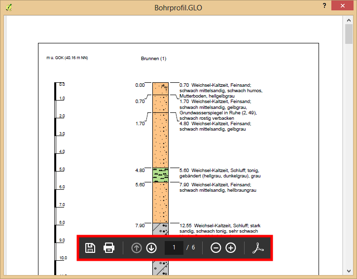
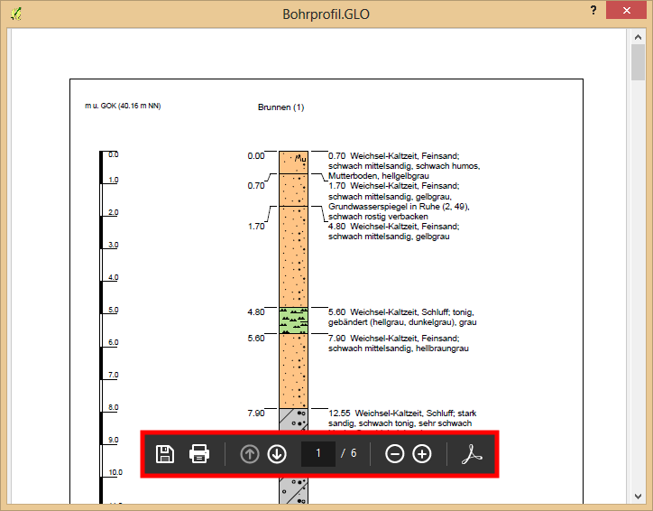

Layouts
Die Layoutansicht erfolgt am Objekt selbst. Dazu wird der Datenbankbaum bis auf die Objektebene geöffnet und das Rechtsklickmenü am gewünschten Objekt aufgerufen.
 Es öffnet sich ein neuer Dialog, in dem der gewünschte Layoutordner ausgewählt werden muss. Die obere Symbolleiste ermöglicht das Hinzufügen eines neuen Ordners aus dem GeODin-Layoutverzeichnis der Standardinstallation. Ebenso kann ein Layoutordner aus der Liste wieder entfernt werden.
In der rechten Tabellenspalte sind alle Layouts aufgeführt, die im ausgewählten Ordner enthalten sind.
Es öffnet sich ein neuer Dialog, in dem der gewünschte Layoutordner ausgewählt werden muss. Die obere Symbolleiste ermöglicht das Hinzufügen eines neuen Ordners aus dem GeODin-Layoutverzeichnis der Standardinstallation. Ebenso kann ein Layoutordner aus der Liste wieder entfernt werden.
In der rechten Tabellenspalte sind alle Layouts aufgeführt, die im ausgewählten Ordner enthalten sind.
 Bei der Darstellung des Layouts handelt es sich um eine temporäre Datei im PDF-Format. Somit stehen auch die üblichen Steuerelemente einer PDF-Datei wie Zoom und Seitenwechsel zur Verfügung. Sämtliche Einstellungen zum Layout müssen in GeODin vorgenommen werden, da das Plugin nur die Ansicht bereitstellt.

Bei der Darstellung des Layouts handelt es sich um eine temporäre Datei im PDF-Format. Somit stehen auch die üblichen Steuerelemente einer PDF-Datei wie Zoom und Seitenwechsel zur Verfügung. Sämtliche Einstellungen zum Layout müssen in GeODin vorgenommen werden, da das Plugin nur die Ansicht bereitstellt.
